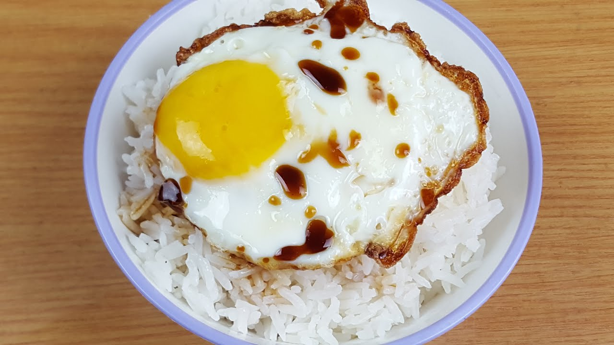

Fried egg over rice with soya sauce.
This very simple recipe will give you a quick dinner when you're low on time or just too lazy to go to the store.
To follow the recipe, you will need to have access to a stove, eggs and rice. Rice cooker is prefered for speed and simplicity.
Ingredients:
- Egg x2
- Rice
- Soya sauce
- Spices (salt, pepper, garlic flakes)
Steps
- Cook rice until done
- Transfer rice to a bowl
- Drizzle soya sauce over rice
- Fry the eggs
- Place the eggs over the rice
- Season and enjoy!